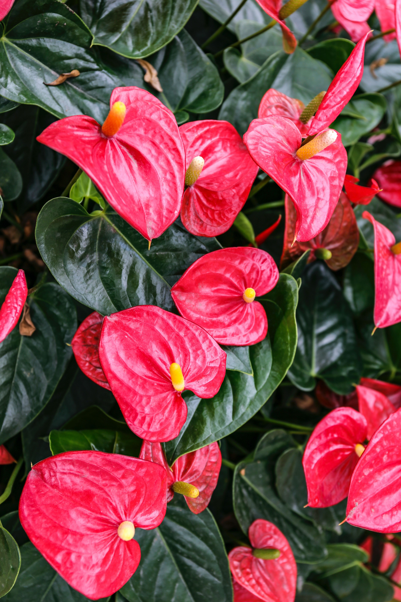
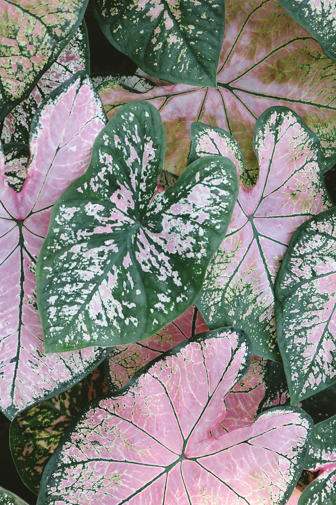
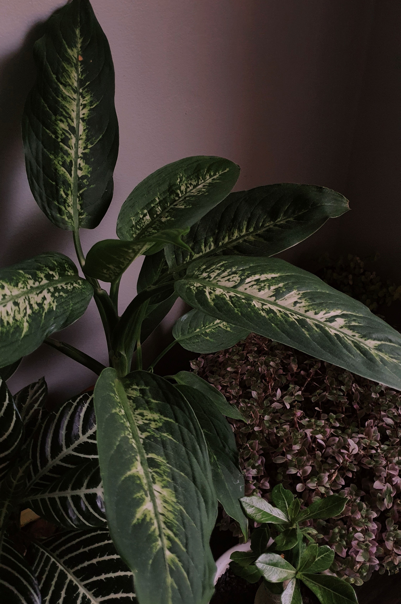
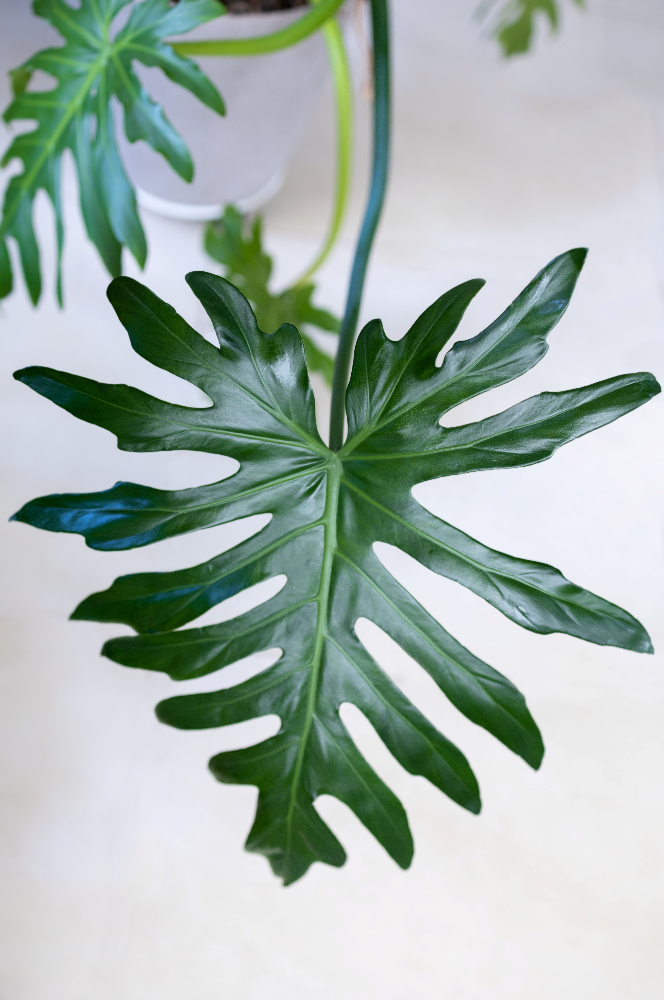
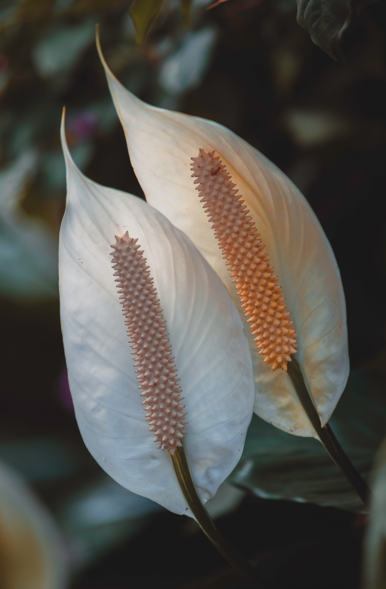
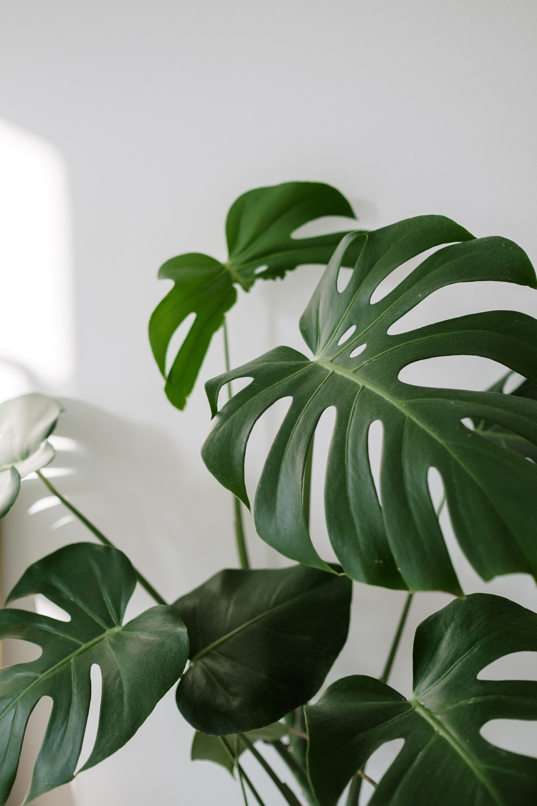

As aráceas são uma família de plantas que inclui uma grande variedade de espécies, muitas das quais são apreciadas por suas folhagens ornamentais. Elas são caracterizadas por suas flores distintas, chamadas espádices, que são compostas por uma espiga cercada por uma bráctea em forma de folha. Algumas das espécies são:
- Costela-de-adão
- Lirio-da-paz
- Antúrios
- Caladios
- Filodendros
As aráceas são amplamente utilizadas como plantas ornamentais devido à sua beleza e folhagens únicas. Elas podem adicionar um toque tropical ou exótico a qualquer ambiente, tornando-as uma escolha popular para decoração de interiores. No entanto, é importante pesquisar as necessidades específicas da espécie de arácea que você possui, pois algumas podem exigir cuidados mais específicos.
Cuidados
- Solo: As aráceas preferem um solo rico em matéria orgânica e bem drenado. Utilize uma mistura de solo leve e aerado, que permita a passagem da água, mas que também retenha umidade suficiente para as raízes.
- Plantio: Escolha um vaso ou local de plantio com boa drenagem. Plante as mudas ou rizomas das aráceas na profundidade adequada, conforme as instruções específicas da planta.
- Temperatura: As aráceas são geralmente plantas tropicais ou subtropicais e preferem temperaturas moderadas. A faixa ideal de temperatura varia de acordo com a espécie, mas a maioria se adapta bem a temperaturas entre 18°C e 27°C.
- Rega: As aráceas preferem umidade constante, mas não gostam de solo encharcado. Regue as plantas quando o solo estiver levemente seco ao toque, evitando que fiquem completamente secas. No entanto, tenha cuidado para não encharcar o solo, pois isso pode levar ao apodrecimento das raízes.
- Luminosidade: As aráceas preferem luz filtrada ou indireta. Posicione-as em locais com luz brilhante, mas evite a exposição direta ao sol forte do meio-dia. Algumas espécies podem tolerar condições de luz mais baixa, mas geralmente é melhor fornecer-lhes luz suficiente para um crescimento saudável.
| Tabela de Cuidados |
| Luz Solar: | Luz indireta ou filtrada, evitando a exposição direta ao sol forte. |
| Rega: | Solo umido, tendo rega quando a terra estiver seca ao toque. Tome cuidado para não encharcar o solo. |
| Temperatura: | Temperatura entre 18°C e 27°C, sendo plantas de clima tropical ou subtropical. |
Galeria





